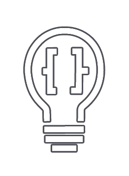
¿Quiénes somos?


Del nombre puedes intuir que somos programadores compitiendo, ¿pero en qué?
Pues en resolver el máximo número de problemas de algoritmia en el mínimo tiempo posible. Una carrera contrarreloj. Los problemas te piden que desarrolles un algoritmo, una secuencia de instrucciones, que lo resuelvan para datos arbitrarios.
Son problemas como los que te encontrarías en una entrevista de trabajo o en algunas de las asignaturas de la carrera. Así que además de ser divertido, le puedes sacar partido durante la carrera y cuando la hayas terminado.
¿Te interesa lo que hacemos? ¡Únete a nuestro canal de Discord! Es nuestro canal de comunicación principal, y no te perderás ninguna noticia. Tienes el resto de nuestros enlaces al final de la página, échales un vistazo ;)
-
01 Actividades y sesiones de entrenamiento
¿Quieres practicar tus habilidades resolviendo problemas de programación? ¡Este es tu sitio! ¡Visítanos en nuestros entrenamiento y ponte a prueba!
-
Viernes 29/11 ¡Números primos!
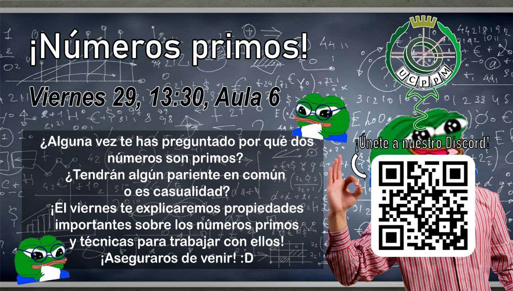
Hola gente!!
Este viernes, quizá os suene, nos vamos al SWERC! Eso significa que esta semana no hay sesión? NO
El pana Noah viene a daros una sesión bien chulona de cosillas de números primos, que bien interesantes que son 😌
Me encantaría estar para ver lo que gestiona el chaval, vayan y denle cariño :)
Mañana a las 13:30 en el aula 6 😇 -
Viernes 22/11 Preparando el final de liga
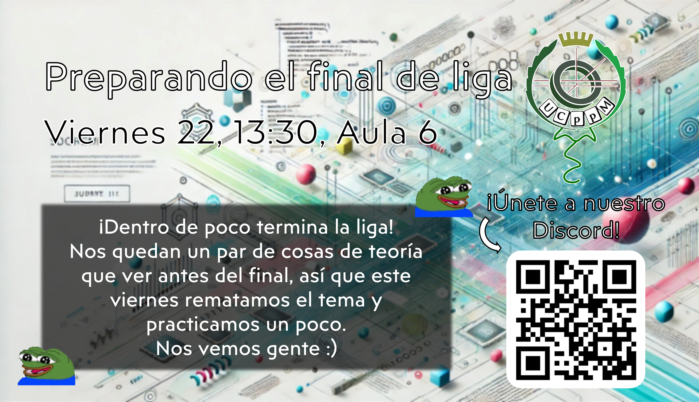
Hola gente!
Queda ya poquito para la última ronda de esta primera liga, e interesa todavía ver unas cosillas de teoría importantes para hacer un final en condiciones :)
Así pues, este viernes rematamos unas cosas más de teoría y practicamos un poquillo. Prometemos intentar hacerlo ligero 😇
Nos vemos este viernes en el aula 6 a las 13:30 🤠 -
Jueves 14/11 Clase de búsqueda binaria
Gente, en vista de lo que salió en la encuesta, mañana habrá otra actividad :)
Esta sí que la vamos a hacer más teórica, para enseñaros cosas bastante importantes. En principio vamos a ver cosas de recursión y de búsqueda binaria, que son fundamentales!
Nos vemos mañana en el aula 6 a las 13:30, como de costumbre :) -
Viernes 08/11 Ronda 2 Liga 1
Gente, este viernes va a ser la segunda ronda de la liga! 🤘🏼
Si no participaste en la ronda anterior no te preocupes, puedes participar en esta :) Y por supuesto, si participaste en la ronda anterior, tocará mantener o mejorar el ranking, ¿no? 🤠
Aula 11 a las 13:30, como de costumbre. Nos vemos chavales 😙 -
Jueves 31/10 Clase de vectores, matrices y complejidad (en Halloween :))

Hola gente! Este viernes es festivo, pero para compensar vamos a hacer una actividad así tranquilita y más improvisada este jueves :)
Vamos a estar viendo más a fondo como manejarse con vectores y matrices, que es verdaderamente importantísimo, fundamental para cualquier cosa de programación competitiva. De paso, si vamos bien de tiempo, comentaremos un poco acerca de lo que es la ”complejidad” o el ”coste” de los que tanto hablamos. Son cosillas que, aunque no sean horriblemente difíciles, son realmente cruciales.
Nos vemos pronto chavales, jueves en el aula 6 a las 13:30 :) -
Viernes 25/10 CCC Octubre 2024
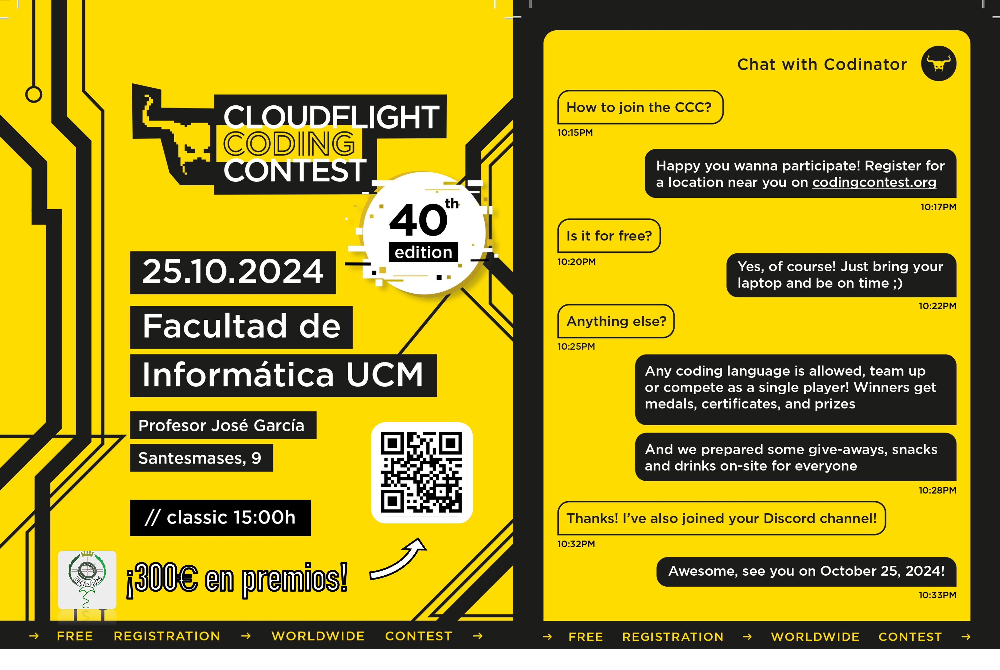
Bueno gente, ahora sí que sí. ¡Este viernes es el Cloudflight Coding Contest! 🔥 🤲
Estas últimas semanas ya os hemos estado comentando por qué nos interesa mucho este evento, pero para refrescar vuestras mentes:
¡Van a venir participantes de otras universidades! Hemos hablado con la URJC, la UAM, la UPM y la CUNEF. Sabemos ya de unos cuantos participantes, veremos con cuantos nos acabamos encontrando el viernes 😁
Unos premios tremendos. Por el simple hecho de participar habrá pegatinas bien chulas (las podéis ver en nuestro Instagram), pero además para los ganadores habrá unas medallas brutales (de nuevo, están en Instagram) y premios en metálico: 150€ para el equipo ganador, 100€ para el segundo y 50€ para el tercero, ¡300€ en juego!. Vamos, una barbaridad 💵
Es un estilo de concurso distinto a lo que estamos acostumbrado, pues es lineal. Una vez resuelvas el primer problema tendrás acceso al segundo. Al resolver el segundo tendrás acceso al tercero, ... Vemos el patrón, ¿verdad? 🤔
¿Te interesa participar? Pues aquí tienes el enlace para apuntarte: enlace
Se puede participar individualmente o en equipos de hasta tres personas. El concurso empieza a las 15:00 y dura cuatro horas. Si alguien no puede estar toda la duración del concurso no pasa nada, aunque entre los premios y la posibilidad de ir a tomar algo después por esto de conocer a la gente de fuera y celebrar yo recomiendo estar hasta el final :)
Será en el aula 9 (es de las grandes jeje). Os pedimos que estéis con media hora de antelación como mínimo para que todo vaya rodado. Nosotros estaremos al menos una hora antes para ir recibiendo a todo el mundo y conocer a los de otras unis. Un saludo gente y que tengáis buena semana :) -
Viernes 18/10 Ronda 1 Liga 1
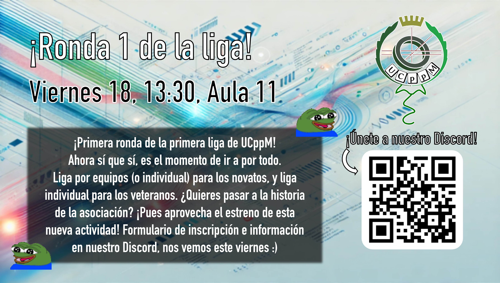
Ya sí gente, ¡este viernes es el primer concurso de la liga! 😁
Como hablamos el último día, la de novatos será por equipos de hasta tres personas (se puede participar individualmente) y la de veteranos será individual. ¿Os mola el asunto? Si es así, rellena el siguiente formulario y estará todo gestionado para el viernes ir directos a los problemas: enlace El formulario es importante, rellenadlo porfis 🙏🏼
La liga consistirá en cuatro concursos en semanas distintas. Los resultados de cada concurso se irán acumulando, y tras el último concurso se sumarán todos los resultados y se verá quiénes son los ganadores. Cada problema resuelto contará un punto hacia el marcador final, y todo el tiempo acumulado de cada concurso sumará hacia el tiempo empleado total.
Nos hace bastante ilusión empezar con esto por fin, os esperamos a todo este viernes en el aula 11. El concurso empieza a las 14:00 y durará dos horas, pero empezaremos la actividad a las 13:30 para gestionar todo con margen. Nos vemos pronto chavales, buena semana 🫶🏼😌 -
Viernes 11/10 ¡Empiezan las ligas!
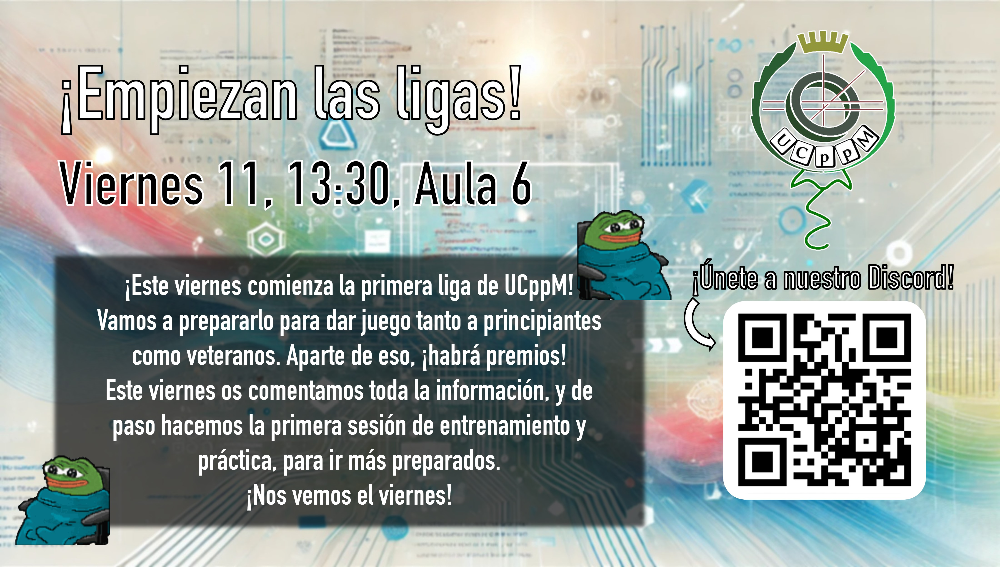
Ahora sí gente , ¡comienzan las ligas! 😙🤘🏼
Este viernes explicaremos del todo en qué va a consistir el asunto, y de paso haremos la primera práctica, que bastante bien vendrá. Como siempre, nos vemos este viernes, aula 6 a las 13:30 🙃 -
Viernes 04/10 ¡Compite en equipo!
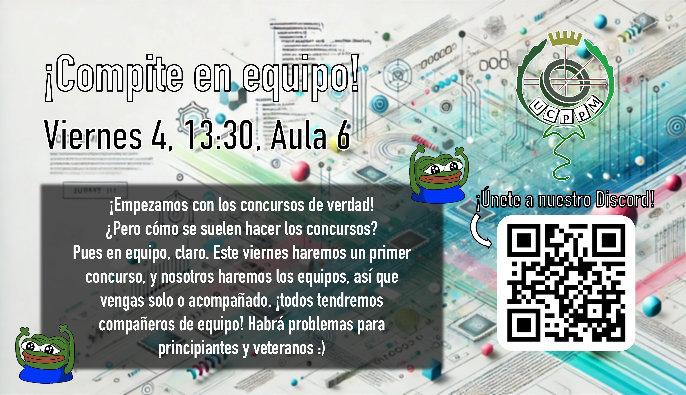
Volvemos a las actividades normales gente. ¡Este viernes hacemos el primer concurso de verdad!
Como muchos sois nuevos y aún no conocéis a demasiada gente, vamos a hacer una cosa distinta a lo usual: los equipos los haremos nosotros. Así podréis aprovechar la actividad para conocer a gente nueva y ver distintas formas de pensar. Habrá problemas de todos los niveles, para que tanto principiantes como veteranos estéis entretenidos y podáis gestionaros vuestras propias estrategias de equipo.
Viernes 4, 13:30, aula 6. Os esperamos :) -
Viernes 20/09 Primeros pasos en UCppM 2024

Bueno, gente, siguiente actividad 🤠
Ahora sí, vamos a dar un primer paso hacia los problemas de programación competitiva, con todo lo que eso conlleva. Haremos vuestros primeros envíos y todo eso :)
Lo intentaremos adaptar a lo más básico posible que hayáis dado en clase. En cualquier caso, tendremos una cosa aparte para si lo que se ha dado en clase va muy justo. Si no os suena Profesor Layton, os recomiendo buscarlo, yo creo que os gustará 🎩
Viernes 20, 13:30, aula 6. Nos vemos gente :) -
Viernes 13/09 Bienvenidos a UCppM 2024

¡Hola! Hemos vuelto, por fin :)
Hemos conocido a mucha gente nueva en los últimos días, así que este viernes haremos una pequeña actividad de introducción al mundo de la programación competitiva para todo el mundo. Da igual si eres nuevo o no del todo, si esto te interesa, quieres conocer a gente y pasar unos buenos ratos, te esperamos con ganas. Os comentaremos lo que está por venir en las próximas semanas, las cosas que hemos hecho y las que haremos. ¡Os vemos este viernes! :) -
Viernes 10/05 Concurso Primavera UCppM 2024
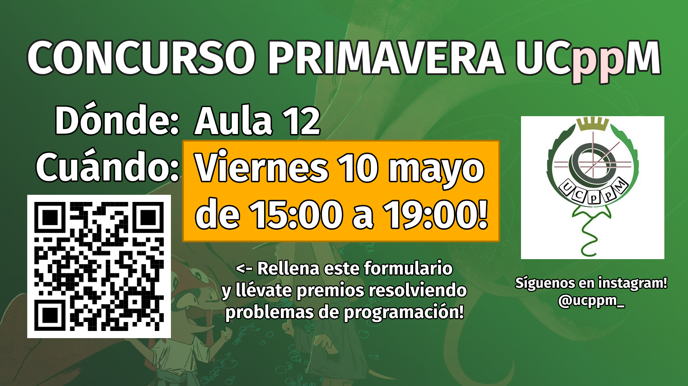
Buenas gente!
Esta semana se acaban las clases, y con ello nuestras actividades de este año. Por ello, terminamos con lo que más nos gusta a todos: un concurso de los de toda la vida. Vamos a hacer una réplica de la regional del Ada Byron de Galicia, que es una oportunidad espectacular. Además, queremos que sea un concurso de verdad, así que sí, habrá regalos bien chulos! (No serán camisetas, jurao). Aparte, es posible que no haya premios SOLO para los ganadores, asi que ojo todo el mundo. Os vemos en el aula 12, como siempre, a las 15:00 :) -
Viernes 26/04 Concurso 26/04/2024
Gente, este viernes toca otro concursillo 😎
Este será decente, no como el CCC. Prometemos que no será lineal y no os atascaremos en el cuarto problema que pa cuando te piensas que lo tienes propones una demostración de P=NP. Aula y hora serán las de siempre, pero os confirmamos cuando tengamos la reserva 🤙🏼🤙🏼 -
Viernes 19/04 Cloudflight Coding Contest 2024
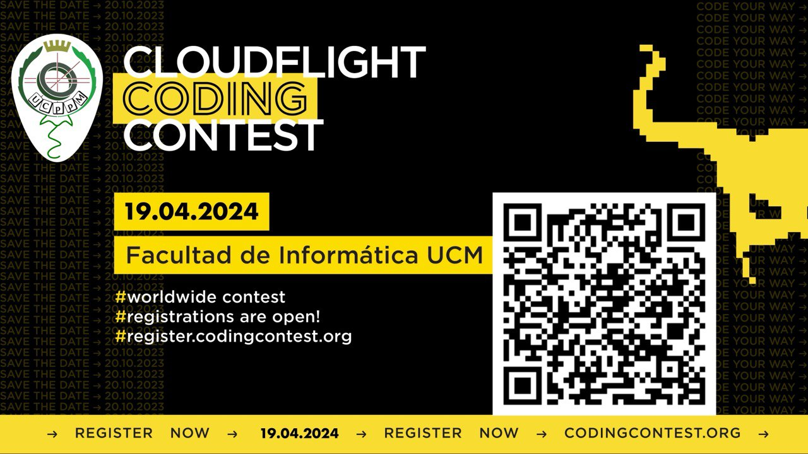
Buenas! Este viernes vuelve a darse el Cloudflight Coding Contest y, al igual que el año pasado, vamos a hostearlo en Madrid!
Si estuviste en el del año pasado ya puedes imaginar cómo va el tema, y si eres nuevo te recomendamos mucho que te apuntes. Es un concurso con un formato bastante divertido y nuevo. Los problemas se hacen de forma lineal y con una dificultad incremental. Además, en vez de evaluarse el código, todo se ejecuta en local y se sube el output. Los documentos con los enunciados son super chulos y tienen un cuidado al detalle brutal. La última vez nos lo pasamos genial, y nos alegra poder ser hosts una vez más :)
Habrá medallas para los ganadores, y pegatinas bastante guapas (que según me han dicho molan hasta más que las anteriores, y esas molaban ya lo suyo eh).
Así que eso, os esperamos este viernes 19. El concurso empieza a las 15:00. Reservaremos un aula para tenerla desde un rato antes, pero eso ya os lo avisamos cuando lo tengamos gestionado.
Se puede participar de forma individual o en equipos de hasta 3 personas. Podéis registraros a través del siguiente enlace: https://register.codingcontest.org/listing/143-2024-04-19/5301/registration
Eso es todo gente, nos vemos pronto :) -
Viernes 12/04 Entrenamiento #8
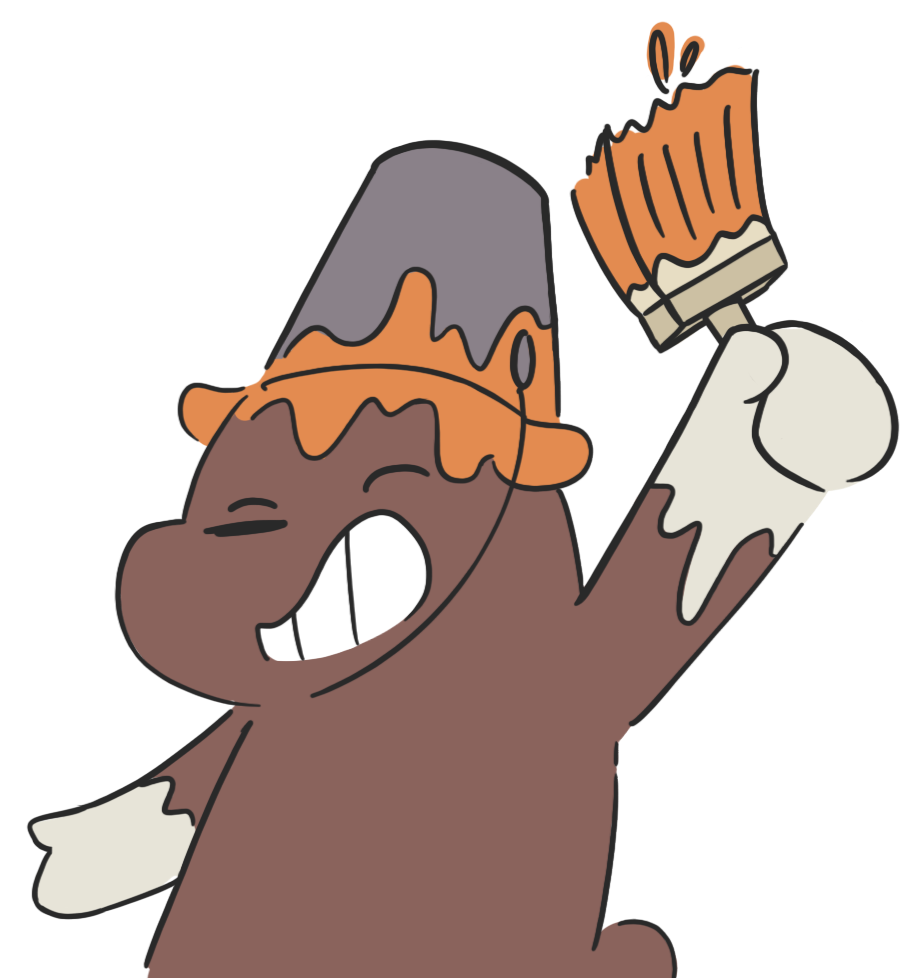
¡Buenas a todos! Después de el coñazo la sesión de teoría de la semana pasada, mañana vamos a hacer una sesión de problemas. Los problemas de mañana son de CALICO, así que habrá problemas de todas las dificultades, y traeremos de invitado a un organizador del concurso (el menda lerenda) por si queréis hacer preguntas sobre los problemas o sobre el concurso en sí. ¡Os esperamos!
-
Viernes 05/04 Entrenamiento #7
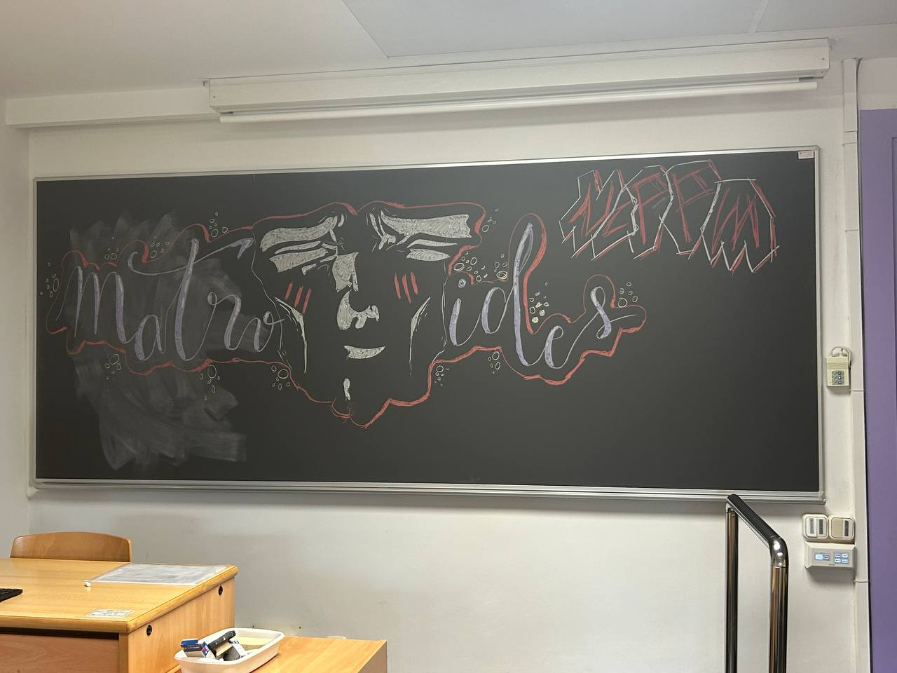
Buenas 🤠
Este viernes tendremos primera sesión tras la Semana Santa, y va a ser un tanto distinta. Esta vez, en vez de dedicar tanto a los problemas, vamos a tener una sesión más divulgativa, y en vez de ser tan de informática va a ser más de matemáticas 🧐
Va a venir nuestro compañero a Ignacio a darnos una charla acerca de “matroides” (algo del Metroid será no sé), concepto al que probablemente todos (o casi todos) somos completamente nuevos. Así que eso, preparen las orejas que se viene una buena 🤙🏼 -
Viernes 15/03 Entrenamiento #6
Por cierto gente, este viernes, para aprovechar que hay mono de problemas después del Ada (excusa de cojones, no hemos dado pa mucho mas), la actividad será sesión de problemas tranquilita, con selección de problemas para novatos y para veteranos, como siempre
Así que eso, actividad tranquilita bing chilling nosequé
Ahí os vemos (aula 12 a las 15:00) 🤙🏼 -
Viernes 01/03 Entrenamiento Ada Byron #2
Gente! La semana que viene es la regional del Ada Byron! Por ello se siente bastante apropiado que este viernes sea el último entrenamiento previo para el mismo. Tendremos problemas para hacer, pero venid con todas las consultas, solicitudes o ideas que queráis, y resolveremos todas las que no se nos escapen de las manos (que esperemos sea ninguna). Y por supuesto, ninguna exclusividad para los concursantes de la regional, que venga quien quiera, que habrá cosas para todos :)
Os vemos el viernes a las 15:00 en el aula 12 (o eso asumo, que no la hemos reservado aún 🤙🏼) -
Viernes 23/02 Mirror OIM
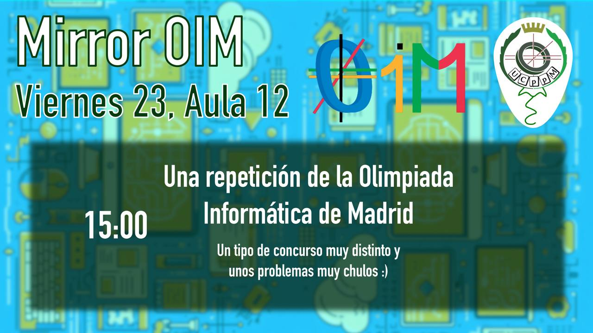
Hola de nuevo :)
Aprovechando lo que se ha dado este fin de semana pasado, este viernes retomamos las actividades dedicando la sesión a los problemas que se pusieron en esta Olimpiada Informática de Madrid pasada. En la retransmisión del sábado hay spoilers y soluciones completas, pero os recomendamos esperar al viernes antes de ver nada. Hay problemas muy chulos y que merece la pena pensar desde el principio.
Os vemos el viernes a las 15:00 en el aula 12 :) -
Viernes 09/02 Entrenamiento Ada Byron #1
Buenas! Espero que hayáis pasado todos unas fantásticas vacaciones, que los exámenes hayan ido bien y que estéis comenzando con ganas el curso.
Por nuestra parte, todo lo de arriba es cierto, así que para comenzar este segundo cuatrimestre hemos decidido tener sesiones de entrenamiento. Aunque su objetivo es ayudar a aquellos equipos que participan en el Ada Byron, estás sesiones están abiertas a todo el mundo, así que no tengáis miedo en pasaros un rato!
Un cambio con respecto a las sesiones del semestre pasado es que en las sesiones de entrenamiento hasta el Ada Byron ya no tendrán un tema, y podremos tocar los temas que os interesen más. Si necesitáis algún concepto específico para resolver un problema, ya os lo contaremos durante la sesión, y si queréis algún tema o temática específica para la sesión, adelante, proponed lo que queráis.
Nos vemos en la primera sesión este Viernes a las 15:00 en el aula 12! -
Viernes 15/12 Yincana navideña
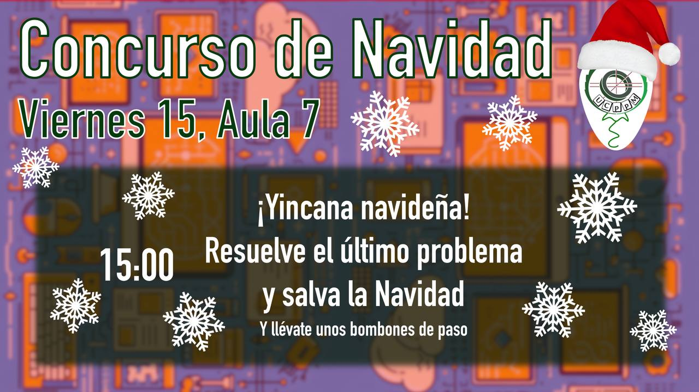 Última actividad del año!
Cerramos esta época con una yincana navideña (o gymcana, gyncana, yo que sé). Todos tenemos ganas de celebrar Navidad, pero bueno… ha habido algunos contratiempos. Vais a tener que ayudarnos a que se puedan celebrar como siempre, y vais a tener que resolver unos problemas para ello.
La actividad va a ser lineal: comienza la historia y te enfrentarás al primer problema. Resuelve el primer problema y podrás continuar con la historia, y de ahí tendrás acceso al segundo problema. Sigue así, resuelve el último y habrás completado la tarea (y con ello salvado la Navidad, poca broma)! Habrá bombones para quienes lleguen al final (y para el resto si nos sentimos generosos).
Os esperamos a todos este viernes, cerremos el año con gusto :) -
Viernes 01/12 Entrenamiento #5
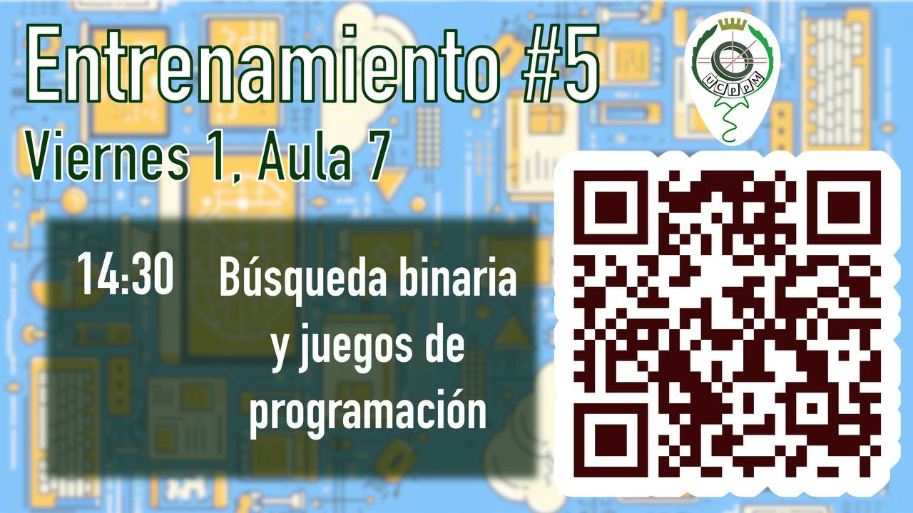 Eu 🫡 Anuncio un poco tardío, pero este viernes será la sesión de búsqueda binaria. Un pilar fundamental de la programación competitiva, sin ella se nos cae todo. Luego si da tiempo (que yo creo que si) quizá nos metamos a ver alguna página de programación que básicamente está para jugar :) (si alguien se quiere hacer algo de spoiler que busque CodinGame en internet, mola bastante)
-
Viernes 24/11 Entrenamiento #4
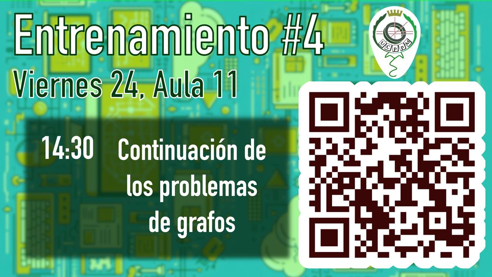 Venga va, esta semana más suavecito.
Seguiremos con los problemas de la semana pasada. Es verdad que lo de los grafos es un mundo, y hace falta tiempo y práctica para interiorizarlos, así que este viernes indagamos un poco más en lo de la sesión anterior, que el DFS y BFS hay que sabérselo mejor que el padre nuestro 🥸 -
Viernes 17/11 Entrenamiento #3
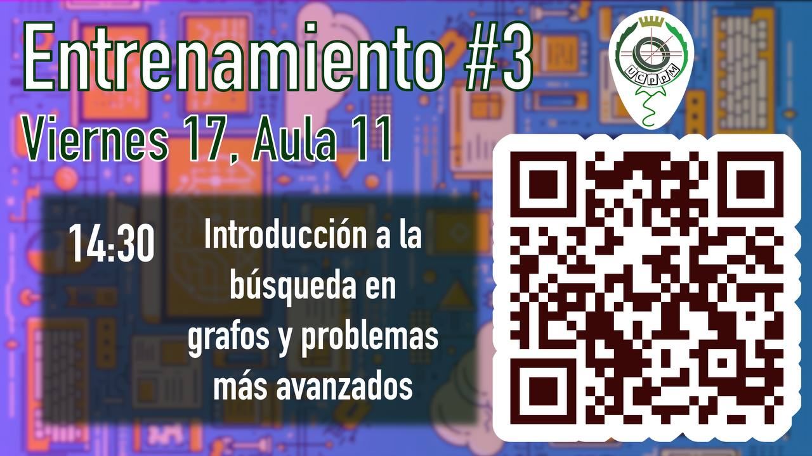 Sesión este viernes asié asié
Nos meteremos al mundillo de los grafos y la exploración en ellos (asunto bastante guapo, si se me permite 🤙🏼) y para los veteranos que sepan hacer DFS y Dijkstra con los ojos cerrados tendremos también una selección de problemas más complicados, esta vez sin una temática predeterminada, para haceros pensar 😎 -
Viernes 03/11 Entrenamiento #2
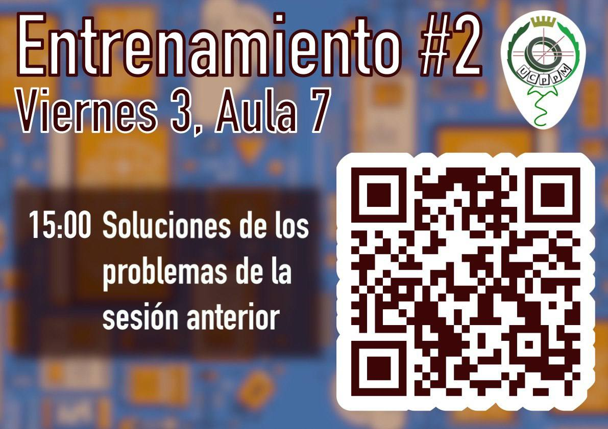 Este viernes echaremos un vistazo a los problemas que sugerimos en la sesión anterior.
Sabemos que los hay complicados, así que los iremos desentrañando juntos :)
Os garantizamos que después de esta sesión sabremos cómo comprobar fácilmente si Tony Stark o Peter Parker mueren 🤧 -
Viernes 27/10 Entrenamiento #1
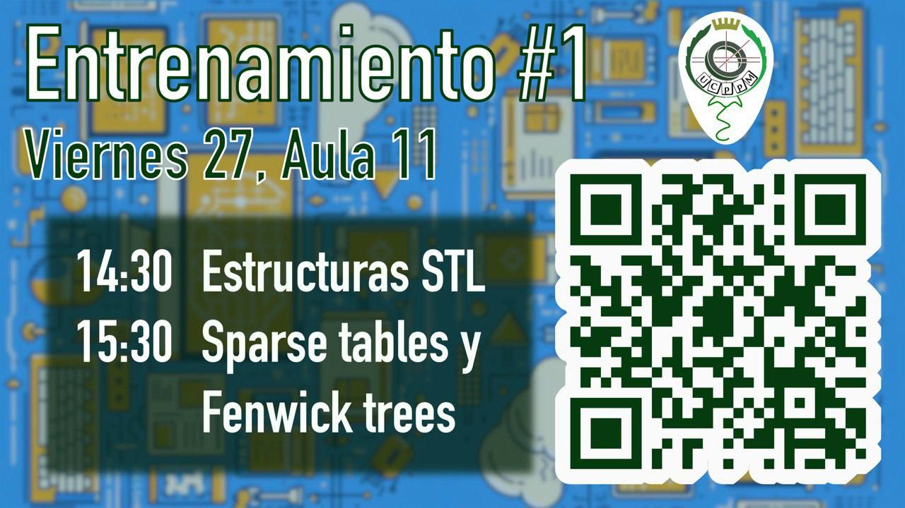 Euu 🤠
Sesión este viernes 27 para principiantes y no tan principiantes. Para los más nuevos, veremos cómo manejarnos con las estructuras básicas de la STL. Son el pan de cada día en la programación competitiva, si eres nuevo este es un punto estupendo por el que empezar 🙃
Para los no tan nuevos, Sparse Tables y Fenwick Trees. Dos estructuras interesantísimas y que nos van a permitir expandir a conceptos súper guapos en sesiones futuras.
Os esperamos con muchas ganas y con una estupenda selección de problemas para trabajar sobre estos conceptos (y picarse tanto como uno decida 😎). -
Viernes 20/10 Cloudflight Coding Contest 2023
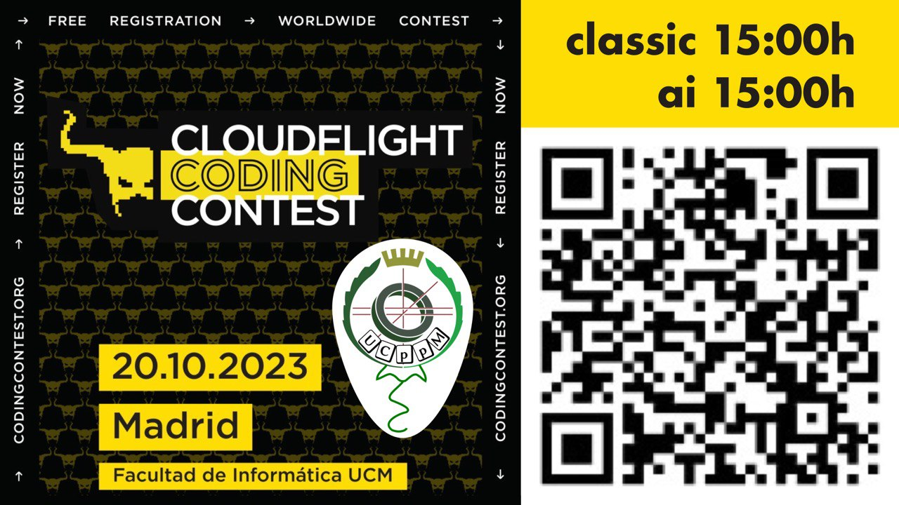 ¡Quedáis invitados a la 38ª edición del Cloudflight Coding Contest!
Este es un concurso de programación organizado por Cloudflight. A diferencia de otros concursos, los problemas están clasificados en niveles, donde para acceder a un nivel debes haber resuelto los niveles anteriores. ¡El objetivo es el último nivel!
Para esta edición Cloudflight y UCppM se han unido para alojar una versión presencial del concurso en la facultad de informática. La competición admite equipos de entre 1 y 3 jugadores, así que reúne a tu equipo, prepara tu portátil y ¡apúntate! ¡Que hay plazas limitadas!
Fecha: 20 de octubre de 2023.
Hora: De 15:00 a 19:00.
Lugar: Aula 7 de la Facultad de Informática de la UCM.
Registro: https://register.codingcontest.org/listing/143-2023-10-20
-
Viernes 06/10 Concurso de iniciación
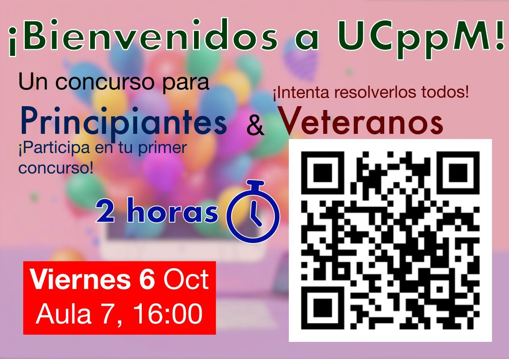
-
Viernes 29/11 ¡Números primos!
-
02 Participación en concursos de programación
Participamos en distintos concursos, entre los que destacamos el Ada Byron, un concurso organizado entre distintas universidades españolas y del que somos campeones este año (y subcampeones y subsubcampeones). Publicaremos las fechas cuando sean decididas. ¿Quieres practicar tus habilidades resolviendo problemas de programación? ¡Este es tu sitio! ¡Visítanos en nuestros entrenamiento y ponte a prueba!
-
02/02 Fase local del Ada Byron 2024
¡La X edición de AdaByron comienza a ponerse en marcha!
La fase local UCM (que servirá para elegir los equipos que representen a nuestra universidad en el regional de Madrid) tendrá lugar el 2 de febrero. La inscripción ya está abierta (hasta el 28 de enero). Tenéis todos los detalles aquí. El regional de Madrid tendrá lugar los días 8 y 9 de marzo, en la UC3M.
Tenéis toda la información en el siguiente enlace: https://ada-byron.es/2024/reg/madrid/locales/ucm/
Tenemos muchísimos buenos recuerdos y amistades de estos concursos, no nos lo pensamos perder. Os recomendamos a vosotros que hagáis lo mismo, seáis nuevos o expertos, es un evento estupendo :)
-
02/02 Fase local del Ada Byron 2024
-
03 Organización del clasificatorio del SWERC
-
SWERC2024-2025
 Ya es definitivo, gente, ¡el clasificatorio del SWERC es esta semana! 🤠
Ya es definitivo, gente, ¡el clasificatorio del SWERC es esta semana! 🤠
Como ya os comentamos, el SWERC es la competición internacional en la que participamos cada año. Son tres días de viaje pagado (este año a Lisboa 🇵🇹), de conocer a gente y de salir de España. Este año será del 29 de noviembre al 1 de diciembre. Hay 6 plazas (para formar 2 equipos), ¿quieres intentar clasificarte? Rellena el siguiente formulario (importante, con la cuenta de la UCM): Formulario Se aceptarán respuestas hasta el jueves 26 a las 22:00. También se puede participar aunque no quieras ir al SWERC, simplemente indícalo en el formulario.
Viernes 27 a las 15:00 en el laboratorio 11. ¡Mucha suerte a todos! 🙃 -
SWERC2023-2024
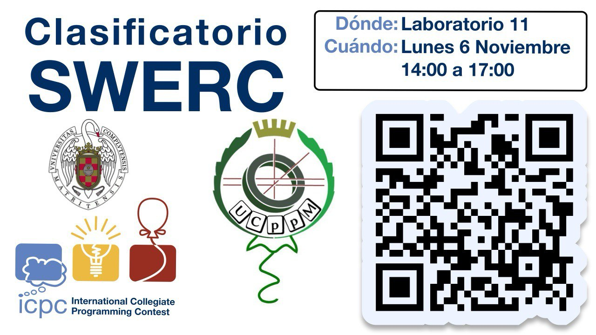 Hey!
La semana que viene hacemos el clasificatorio para el SWERC. Este es el concurso clasificatorio Europeo para el ICPC, el nivel es altísimo!
Os animamos a venir y darlo todo, a ver quienes serán nuestros representantes en París. Es una experiencia única, merece muchísimo la pena.
Así que eso, a ver quienes serán nuestros representantes este año en París 🙌🏼
Formulario
Fecha límite de inscripción: Sábado 4 de noviembre.
-
SWERC2024-2025
-
04 Voluntario de otros concursos no universitarios
Somos voluntarios de la OIM y OIE además de ProgramaMe. Mantente atento para más información en el futuro.
Junta directiva
Fernando Isaías Leal Sánchez
Presidente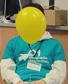
David Andrés López Gómez
Vicepresidente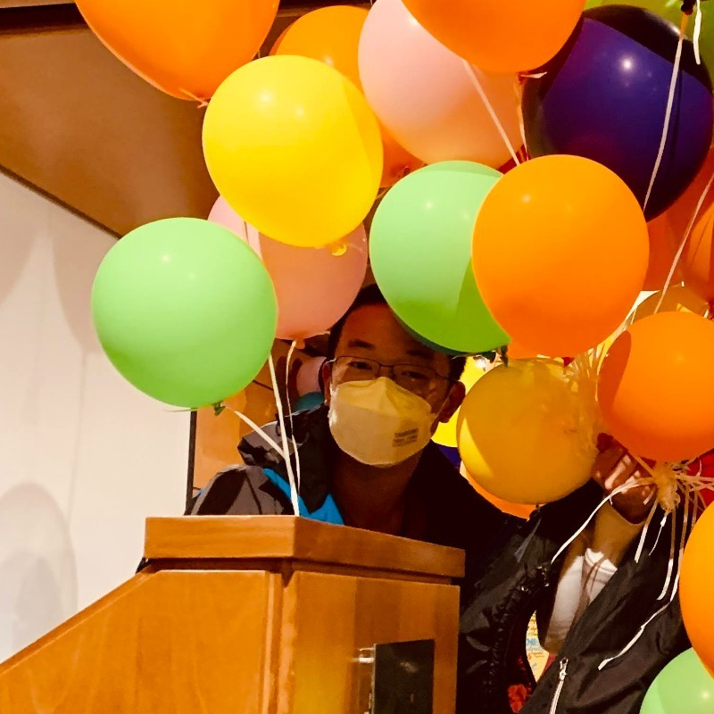
Jinqing Cai
Secretario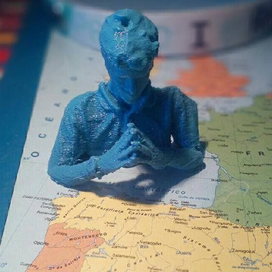
Pablo Cageao Honduvilla
TesoreroPreguntas frecuentes
-
Soy nuevo en la programación competitiva. ¿Hay actividades para todos los niveles?
¡Por supuesto! Hacemos actividades para todos los niveles, desde los más principiantes hasta los mejores candidatos para el SWERC.
-
¿Cuándo se hacen las actividades?
Intentamos hacer actividades cada semana. ¡Échale un vistazo a nuestro grupo de Telegram para estar al tanto de todo lo que hacemos!
-
¿Qué temas se tratan en las sesiones?
De todo. Hacemos actividades por el simple hecho de pasarlo bien, concursos, actividades temáticas y, por supuesto, entrenamientos, donde hacemos problemas que seleccionamos para la ocasión y tratamos conceptos concretos, desde algoritmos básicos hasta estructuras de datos avanzadas. Si quieres ver un tema en particular, no dudes en proponérnoslo. Nos adaptaremos a lo que la gente quiera ver.
-
Quiero practicar por mi cuenta. ¿Dónde puedo encontrar problemas?
La página principal que usaremos como referencia es aceptaelreto.com.
Si tienes ganas de más puedes echarle un vistazo a otras páginas como Kattis o a las rondas semanales de Codeforces. -
¿Tengo que hacer algo para apuntarme a las actividades?
¡Nada! Estate atento a las actividades y ven a las que quieras, estaremos aquí para recibirte.